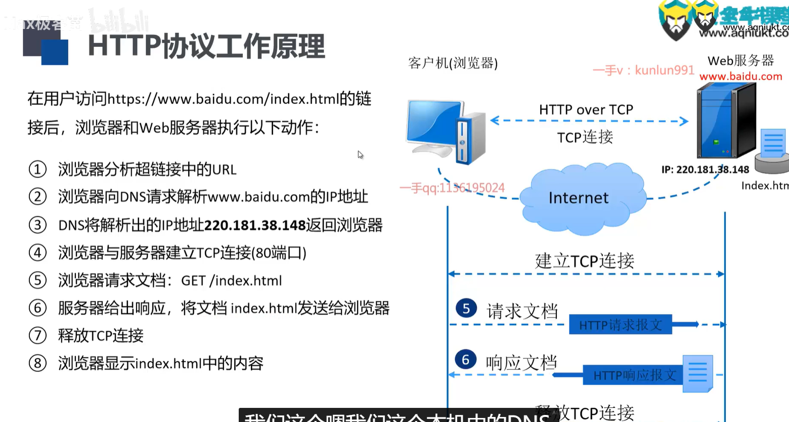
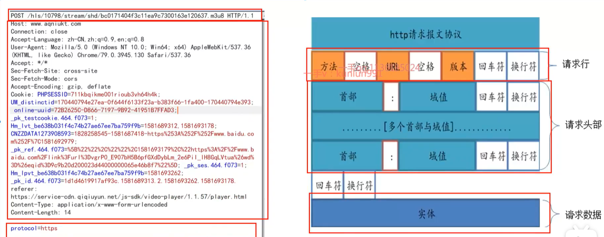
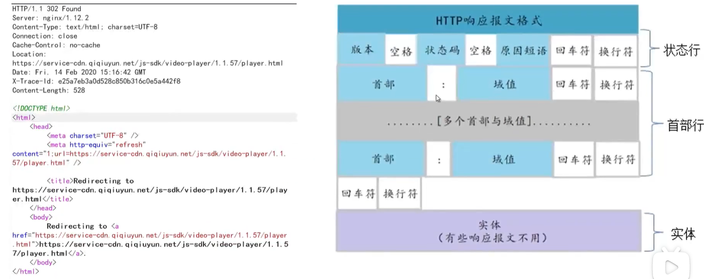
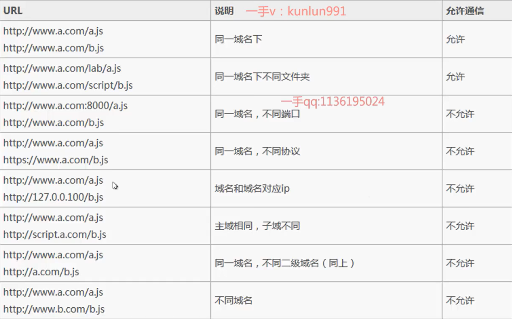

前置技能（HTTP协议）
一、HTTP协议简介
什么是HTTP协议：
- 协议：计算机通信网络中两台计算机之间进行通信所必须共同遵守的规定或规则
- HTTP协议：Web服务器和客户端直接进行数据传输的规则，无状态[无记忆]的应用层
- HTTPS[安全]协议：以安全为目标的HTTP通道，HTTP+传输加密、身份认证（保证传输过程安全性）
工作原理：

非持久性连接、持久性连接：
| 非持久性连接 | 持久性连接 |
|---|---|
| 浏览器每请求一个web文档，就创建一个新的连接，当文档传输完毕后，连接就立刻被释放。 HTTP 0.9、HTTP1.0采用此连接方式 对于请求的web页中包含多个其他文档对象(如图像、声音、视频等)的链接的情况，由于请求每个链接对应的文档都要创建新连接，所以效率低下。 |
在一个连接中，可以进行多次文档的请求和响应。服务器在发送完响应后，并不立即释放连接，浏览器可以使用该连接继续请求其他文档。连接保持的时间可以由双方进行协商。 |
二、HTTP报文分析
- 请求报文


以POST方式请求访问某台 HTTP 服务器上的 /form/login 页面资源，并附带参数 name = veal、age = 37，是HTTP1.1版本，请求体长度为16
开始有post->最后一行数据
- 响应报文

实体是一个实际情况
- HTTP请求方法
- GET[查]：请求指定的页面信息，并返回实体主体
- POST[z增]：向指定资源提交数据进行处理请求(比如提交表单或者上传文件)。数据被包含在请求体中。 POST请求可能会导致新的资源的建立或已有资源的修改。
- HEAD：向服务器索要与GET请求相一致的响应，只不过响应体将不会被返回。这一方法可以在不必传输整个响应内容的情况下，就可以获取包含在响应消息头中的元信息。（扫描端口）
- PUT[增]：向指定资源位置上传其最新内容（可用post替代，一般此方法被禁用）
- DELETE[删]：请求服务器删除Request-URL所标识的资源
- OPTIONS：返回服务器针对特定资源所支持的HTTP请求方法，也可以利用向Web服务器发送“*”的请求来测试服务器的功能性（设置服务器配置文件把危险方法禁用）
- TRACE：回显服务器收到的请求，主要用于测试或者诊断
- CONNECT：HTTP/1.1协议中预留给能够将连接改为管道方式的代理服务器
get和post区别
| get | post | |
|---|---|---|
| 数据位置 | 后面的URL | link放在下面 |
| 请求数据大小 | 有限制 | 无限制 |
| 获取数据 | query string | 提交form表单 |
| 安全性 | 直接在URL，不安全 | 相对安全 |
- HTTP状态码
状态码[Status-Code]：响应报文状态行中包含的一个3位数字。指明特定的请求是否被满足，如果没有满足，原因是什么
分类：
| 状态码 | 响应类别 | 含义 |
|---|---|---|
| 1xx | 信息性状态码 | 服务器正在处理请求 |
| 2xx | 成功状态码 | 请求已正常处理完毕 |
| 3xx | 重定向状态码 | 需要进行额外操作以完成请求 |
| 4xx | 客户端错误状态码 | 客户端原因导致服务器无法处理请求 |
| 5xx | 服务器错误状态码 | 服务器原因导致处理请求错误 |
| 状态码 | 含义 | |
|---|---|---|
| 2xx | 200 | 请求被服务器正常处理（最常见） |
| 204 | 请求已成功处理，但没有内容返回[eg.只是客户端向服务器发送请求] | |
| 206 | 服务器已完成部分GET请求 | |
| 3xx | 301 | 永久重定向，资源已永久分配新URL |
| 302 | 临时重定向，资源已临时分配新URL | |
| 303 | 临时重定向，期望使用GET定向获取 | |
| 304 | 发送附带条件请求未满足 | |
| 307 | 临时重定向，POST不会变成GET | |
| 4xx | 400 | 请求报文语法/参数错误[修改后再发送] |
| 401 | 需要通过HTTP认证/认证失败[未授权访问] | |
| 403 | 请求资源被拒绝 | |
| 404 | 无法找到请求资源 | |
| 5xx | 500 | 服务器故障/Web应用故障 |
| 503 | 服务器超负载/停机维护 |

- HTTP头部
| 类型 | 头（Header） | 说明 |
|---|---|---|
| 请求 | User-Agent | 浏览器和它平台的信息[Mozilla4.0] |
| Accept | 客户能处理的页面类型[text/html] | |
| Accept-Charset | 客户可接受的字符集[Unicode-1-1,UTF-8] | |
| Accept-Encoding | 客户能处理的页面编码方法[gzip] | |
| Accept-Language | 客户能处理的自然语言[en(英语)、zh-cn(简体中文)] | |
| Host | 服务器的DNS名称，必须从URL提取 | |
| Referer | 用户从该URL代表的页面发出访问当前请求的页面（验证） | |
| Cookie | 将以前设置的Cookie送回服务器，用来作为会话信息（保存） | |
| Date | 消息被发送时的日期和时间 | |
| 响应 | Date | 消息被发送时的日期和时间 |
| Server | 关于服务器的信息，如Microsoft-IIS/6.0 | |
| Content-Encoding | 内容是如何被编码的[gzip] | |
| Content-Language | 页面所使用的自然语言 | |
| Content-Length | 以字节计算的页面长度 | |
| Content-Type | 页面的MIME类型 | |
| Last-Modified | 页面最后被修改的时间和日期，在页面缓存机制中意义重大 | |
| Location | 客户将请求发送给别处，重定向到另一个URL | |
| Set-Cookie | 服务器希望客户保存一个Cookie |
- HTTP会话
一次会话就是你与某个网站进行了一次完整的交流，这个交流可能会你来我往很多次（一次会话可能会有很多次请求、响应，就像人与人的一次会话会有很多对话）。
HTTP 是一种无状态协议，这意味着每次请求都是独立的，服务器不会记录客户端的状态信息。为了实现状态管理，HTTP 引入了 Cookie 和 Session 机制。
简单来说，我们电脑与网站服务器又不和人一样能面对面互相见到，它怎么知道我是我？cookie与session就相当于我们双方的“脸部特征”，让我们能够互相认识，从而不用每说一句之前都得重新“自我介绍“。
| session | Cookie |
|---|---|
| 在服务器保存状态信息的机制。 服务器在接收到客户端的请求时，为该客户端创建一个 Session 对象，并将该对象的 ID 保存在一个 Cookie 中发送给客户端。 客户端在下一次请求时将该 Cookie 发送回服务器，服务器根据 Cookie 中的 Session ID 来查找该客户端对应的 Session 对象，从而实现状态管理。 |
在客户端保存状态信息的机制。 服务器可以通过 Set-Cookie 头部向客户端发送一个 Cookie，客户端在下一次请求时将该 Cookie 发送回服务器。 服务器可以根据 Cookie 的内容来识别客户端的身份，从而实现状态管理。 |
| 典型的场景比如购物车，当你点击下单按钮时，由于HTTP协议无状态，所以并不知道是哪个用户操作的，所以服务端要为特定的用户创建了特定的 Session，用用于标识这个用户，并且跟踪用户，这样才知道购物车里面有几本书。 | 每次HTTP请求的时候，客户端都会发送相应的Cookie信息到服务端。 大多数的应用都是用 Cookie来实现 Session跟踪的，第一次创建 Session的时候，服务端会在HTTP协议中告诉客户端，需要在Cookie里面记录个SessionID，以后每次请求把这个会话ID发送到服务器，我就知道你是谁了。 |
| 保存在服务端的，有一个唯一标识。 在服务端保存 Session的方法很多，内存、数据库、文件都有。 集群的时候也要考虑 Session的转移，在大型的网站一般会有专门的 Session服务器集群，用来保存用户会话，这个时候 Session信息都是放在内存的，使用一些缓存服务比如 Memcached之类的来放 Session。 |
Cookie是指某些网站为了辨别用户身份而储存在客户端上的数据（通常经过加密）。 也就是说，只要有了某个用户的 cookie，就能以他的身份登录。 |
| 提示中说，只有admin身份可以获得flag，抓包，cookie信息的admin=0（false），我们尝试将其改为1(true)，扔进repeater模块，进行改包，将cookie身份改为admin，得到flag。 |
- 工作原理：
客户端请求服务端
——> 服务端开启会话，并下发一个特殊的COOKIE（会话的唯一标识符）， 服务端将会话数据存储在指定位置
——>客户端收到服务端响应内容，并且保存这个COOKIE
——>客户端在下一次请求服务端时带上这个COOKIE，服务端根据这个唯一标识符读取相关会话数据，恢复会话的状态
三、HTTP协议中的URL
- 什么是URL？
统一资源定位符。
从互联网得到资源的位置和访问方法的简洁表示，是互联网上标准资源的地址
互联网上每个文件都有一个唯一的URL
- URL格式
| 协议:// | 用户名：密码@子域名.域名.顶级域名 | ：端口号 | /目录 | /文件名.文件后缀 | ？参数=值 | #标志 |
|---|---|---|---|---|---|---|
| 相对URL | /目录 | /文件名.文件后缀 | ？参数=值 | #标志 | ||
| http:// | www.xxxx.com | ：80 | /test | /index.html | ?boardID=5&ID=24618 | #name |
- URL中协议
| http | 超文本传输协议 |
|---|---|
| https | 用安全套字层传送的超文本传输协议 |
| ftp | 文件传输协议 |
| mailto | 电子邮件地址 |
| ldap | 轻型目录访问协议搜索 |
| file | 当地电脑/网上分享的文件 |
| news | Usenet新闻组 |
| gopher | Gopher协议 |
| telnet | Telnet协议 |
- URL编码 1. URL只能用ASCII字符集 通过因特网发送 2. URL编码只能使用 % 加两位的十六进制数 替换非ASCII字符 3. URL不能包含空格 用+替换空格 4. 只有字母和数字[0-9 a-z A-Z]、一些特殊符号[$-_.+!'()不包括“”]、某些保留字，才可以不经过编码直接用于URL
- 同源策略SOP
同源：域名、协议、端口号 相同
同源策略：浏览器的行为，为了保护本地数据不被JavaScript代码获取回来的数据污染
原因：如果没有同源设计策略，那么在A.com网站加载过的js脚本，就能在没有加载过这个脚本的B.com上的页面随意执行并被读取，可能造成页面混乱、被破坏、数据窃取…不安全行为，如前端跨域安全

相关知识
- curl
一种命令行工具
作用：发出网络请求，得到和提取数据，显示在"标准输出"（stdout）上面。
Curl不只是一个编程用的函数库，这个命令本身，就是一个无比有用的网站开发工具。 它支持多种协议
用于网站开发：
- 查看网页源码 直接在curl命令后加上网址，就可以看到网页源码。
> 以网址www.sina.com为例
- 显示头信息
-i参数可以显示http response的头信息，连同网页代码一起。 - 显示通信过程
-v参数可以显示一次http通信的整个过程，包括端口连接和http request头信息。 - 发送表单信息 发送表单信息有GET和POST两种方法。
GET方法相对简单，只要把数据附在网址后面就行。
>curl example.com/form.cgi?data=xxx
POST方法必须把数据和网址分开，curl就要用到--data参数。
> curl -X POST --data "data=xxx" example.com/form.cgi
如果数据没有经过表单编码，还可以让curl编码，参数是--data-urlencode。
- HTTP动词
curl默认的HTTP动词是GET，使用
-X参数可以支持其他动词。 - cookie
使用
--cookie参数，可以让curl发送cookie。
> curl --cookie "name=xxx" www.example.com
具体的cookie的值，可以从http response头信息的Set-Cookie字段中得到。
-c cookie-file可以保存服务器返回的cookie到文件，-b cookie-file可以使用这个文件作为cookie信息，进行后续的请求。
- HTTP认证
有些网域需要HTTP认证，这时curl需要用到
--user参数。